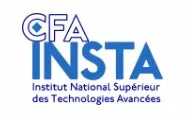

Technicien Systèmes & Réseaux — Alternance Finaxiome
Étudiant en BTS SIO option SISR au CFA Insta, Paris. Passionné par les infrastructures, les réseaux et la cybersécurité. Ce portfolio présente mon parcours, mes projets et mes compétences.
Bonjour, je m'appelle Ethan Cornu, j'ai 21 ans et je suis actuellement en BTS SIO option SISR (Solutions d'Infrastructure, Systèmes et Réseaux) au CFA Insta à Paris.
En alternance chez Finaxiome, une ESN basée à Bezons, j'occupe un poste de Technicien Helpdesk / Support utilisateur, où j'interviens quotidiennement sur des environnements réels.
Ce portfolio a pour objectif d'exposer mon parcours, mes réalisations et les aptitudes développées durant ma formation. Il me sert également de support pour l'épreuve E4 du BTS SIO.
Finaxiome Développement est une entreprise française de services numériques spécialisée dans l'intégration, l'exploitation et la sécurisation des systèmes d'information pour les PME, ETI et structures publiques.
www.finaxiome.comFormation de deux ans axée sur les compétences techniques en informatique. L'option SISR prépare aux métiers liés à l'administration des réseaux, la gestion d'infrastructures, et la virtualisation.

Centre de formation en alternance spécialisé dans les métiers de l'informatique et du numérique, du BTS au Bac+5. Rythme alterné et partenariats entreprises pour une solide expérience professionnelle.
Conception et développement d'un portfolio personnel en HTML/CSS/JS pour présenter mon parcours, mes compétences et mes réalisations dans le cadre de l'épreuve E4 du BTS SIO. Design minimaliste, hébergé sur GitHub Pages.
Mise en place d'un contrôleur de domaine Active Directory avec stratégies GPO chez Finaxiome pour centraliser la gestion des utilisateurs et sécuriser les postes du réseau Windows Server.
Mise à jour du firmware Fortigate de plusieurs clients via FortiManager pour bénéficier des dernières optimisations logicielles, garantissant une meilleure stabilité réseau et une gestion plus fluide du trafic.
Déploiement et configuration d'une solution de monitoring PRTG chez Finaxiome pour superviser en temps réel la santé des infrastructures réseaux (sondes Veeam, seuils d'alerte, approbation des probes) et anticiper les interruptions de service.
Installation et configuration d'un serveur mail MailCow dockerisé sur Debian. Déploiement des conteneurs (Postfix, Dovecot, SOGo, Nginx), configuration DNS Active Directory, création des boîtes mail et intégration avec GLPI pour les notifications de tickets.
Configuration d'une règle d'exclusion URL sur FortiGate via l'interface GUI FortiManager. Création d'un filtre Web Filter avec règle Static URL Filter pour autoriser un site catégorisé (Armurerie-girod.com) sur un profil de sécurité client.
Conception et deploiement de l'infrastructure reseau pour BioVision, fondation a but non lucratif engagee dans la cooperation au developpement ecologique et durable. Architecture multi-sites avec segmentation en zones (WAN, DMZ, LAN, Serveurs), pare-feu pfSense, VLANs Cisco, Active Directory avec automatisation PowerShell des UO et utilisateurs, et mise en place de GPO de securite.
L'essor de l'intelligence artificielle souleve des enjeux environnementaux majeurs : consommation energetique des data centers, empreinte carbone des modeles, utilisation massive d'eau et de ressources rares. Cette veille explore les differentes facettes de cet impact et les pistes pour une IA plus durable.
L'Agence internationale de l'Energie anticipe une multiplication par 10 de la consommation d'electricite du secteur de l'IA entre 2023 et 2026. Les data centers, deja responsables de 4% de la consommation globale d'energie, voient leur demande doubler sous l'effet de l'IA generative. Une requete ChatGPT consomme 5 a 10 fois plus d'electricite qu'une recherche web classique.
→ ecologie.gouv.frL'entrainement de GPT-3 a libere 552 tonnes de CO2, soit l'equivalent des emissions annuelles de 123 voitures a essence. Les geants du secteur signalent des hausses d'emissions allant jusqu'a 48% depuis 2019. L'inference (l'utilisation quotidienne) represente environ 60% de l'empreinte carbone totale d'un modele, contre 40% pour son entrainement.
→ jedha.coLe refroidissement des serveurs d'IA necessite d'enormes quantites d'eau douce. A l'echelle mondiale, les data centers hebergeant l'IA devraient consommer six fois plus d'eau que le Danemark. En juin 2025, OpenAI a indique qu'une requete moyenne sur ChatGPT consommait environ 0,32 ml d'eau, un chiffre qui, multiplie par des milliards de requetes, pose un reel defi hydrique.
→ wikipedia.orgFabriquer un ordinateur de 2 kg necessite 800 kg de matieres premieres. Les puces GPU qui alimentent l'IA dependent d'elements de terres rares extraits de maniere souvent destructrice. Selon l'etude Green IT de 2025, 69% des impacts environnementaux de l'IA ne sont pas lies au climat mais a l'epuisement des ressources et la pollution atmospherique.
→ greenit.frFace a ces enjeux, le concept d'IA frugale emerge. Le modele BLOOM de Hugging Face n'a emis que 25 tonnes de CO2 grace a des puces plus efficaces, contre 552 pour GPT-3. La France a lance en fevrier 2025 une Coalition pour une IA ecologiquement durable avec le PNUE et l'UIT, et un referentiel general pour l'IA frugale a ete publie.
→ entreprises.gouv.frL'Assemblee des Nations Unies pour l'environnement (UNEA-7) a inscrit l'impact environnemental de l'IA a son agenda en decembre 2025. L'AI Act europeen et la loi REEN en France imposent des mesures de transparence et de sobriete numerique. L'enjeu : obliger les entreprises a divulguer les consequences environnementales de leurs produits IA.
→ unep.orgDisponible pour des opportunités, des collaborations ou simplement pour échanger autour de l'IT, des réseaux et des nouvelles technologies.
Ethancornu@gmail.com